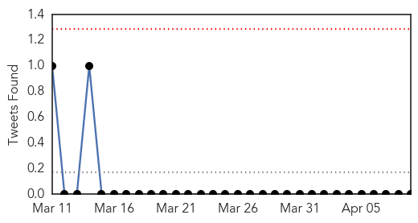
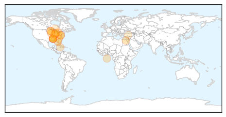
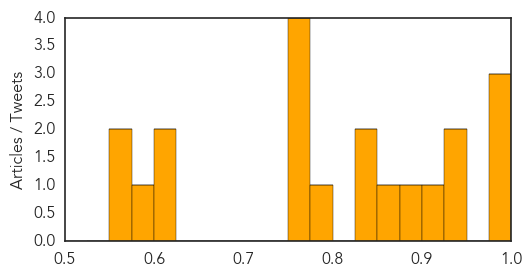

Influenza
30-Day Web Trend
2 alerts, 0 warnings

30-Day Twitter Trend
4 alerts, 0 warnings

Article Locations
Article Confidences
Top Articles:
- 0.994
- Ont. bird flu outbreak caused by H5N2, same virus that hit B.C.
- 0.993
- Ont. bird flu outbreak caused by H5N2 virus
- 0.983
- Dog Flu Epidemic Could Spread
- 0.947
- Officials: Owners Should Consider Vaccinating Dogs Against Flu Virus
- 0.933
- Bird deaths by county: The avian flu outbreak in Minnesota
- 0.910
- Bird flu war intensifies
- 0.895
- Kids with neurological disorders need flu vaccines but don't always get them
- 0.857
- Vets in Michigan concerned about dog flu outbreak
- 0.849
- Avian flu infects Meeker County flock of 310,000
- 0.839
- WHO notes 9 new H5N1 cases in Egypt, outlines patterns
- 0.778
- Avian flu infects Meeker County flock of 310,000
- 0.751
- April 9, 2015 Archives
- 0.751
- April 9, 2015 Archives
- 0.751
- April 8, 2015 Archives
- 0.751
- April 8, 2015 Archives
- 0.615
- Ohio poultry at risk for a potent strain of avian influenza
- 0.609
- High demand of dog flu vaccine causes shortage
- 0.598
- Fargo's Sanford has new bio-containment unit
- 0.568
- Deadly Bird Flu Hits Ninth Minnesota Farm
- 0.550
- Avian Influenza Confirmed On Farm In Southern Ontario
Top Tweets:
-
No tweets found for Apr 09, 2015
Unknown
30-Day Web Trend
0 alerts, 0 warnings

30-Day Twitter Trend
0 alerts, 0 warnings

Article Locations

Article Confidences

Top Articles:
- 0.982
- Health Ministry: Increase In Chicken Pox Reports
- 0.972
- CFIA Pinpoints Strain Responsible for Oxford County’s Avian Flu Outbreak
- 0.962
- The Kathmandu Post :: 3 die, 500 down due to FLU-like disease
- 0.960
- As Drug-Resistant Bug Spreads Through California, No Cases...
- 0.952
- Connecticut researchers monitoring distribution of rare, non-treatable virus
- 0.946
- Niger isolates bird 'flu farm' as region takes precautions
- 0.944
- Niger isolates suspected bird flu farm as region takes precautions
- 0.939
- UPDATE 1-Niger isolates suspected bird flu farm as region takes precautions
- 0.937
- Niger isolates suspected bird flu farm as region takes precautions
- 0.935
- Chickenpox and intestinal bug cases increase
- 0.929
- Hog disease spread slows in Canada
- 0.918
- Sudden diarrhea outbreak sends hundreds to hospital
- 0.917
- Chicago Tribune
- 0.917
- Chicago Tribune
- 0.917
- Chicago Tribune
- 0.917
- Chicago Tribune
- 0.917
- Chicago Tribune
- 0.917
- Chicago Tribune
- 0.917
- Chicago Tribune
- 0.917
- Chicago Tribune
- 0.917
- Chicago Tribune
- 0.917
- Chicago Tribune
- 0.917
- Chicago Tribune
- 0.917
- Chicago Tribune
- 0.917
- Chicago Tribune
- 0.917
- Chicago Tribune
- 0.917
- Chicago Tribune
- 0.917
- Chicago Tribune
- 0.917
- Chicago Tribune
- 0.917
- Chicago Tribune
- 0.917
- Chicago Tribune
- 0.917
- Chicago Tribune
- 0.914
- Broke-Zimbabwean Govt fails to Fight Foot and Mouth … As the Elite Seek Medicals in Asia
- 0.908
- Despite vaccination, 2 polio cases surface in Sargodha
- 0.890
- Canada Expands Turkey Farm Quarantine to Stem Bird Flu — Naharnet
- 0.886
- New Deadly Tick Disease Worse Than Lyme
- 0.884
- Seafood Safety 101: Vibrio in Shellfish
- 0.872
- Betting the Lexington Stakes on a $20 Budget (también en Español)
- 0.862
- U.S. bird flu outbreak accelerates as wild ducks migrate north
- 0.853
- If you had chickenpox, watch out for shingles
- 0.852
- Ticks bringing another illness to Connecticut
- 0.846
- A US bird flu outbreak is accelerating as wild ducks migrate north
- 0.834
- Doctors issue warning about new tick virus found in CT
- 0.821
- First report of a new crop virus in North America
- 0.804
- CVS Health Announces New Clinical Affiliations with Leading Medical Centers in Arizona and Illinois
- 0.769
- Cayman claims low record of food poisoning
- 0.735
- SgMaV-1: New Switchgrass Crop Virus Discovered In North America
- 0.724
- Dinniman to Speak at Film on Lyme Disease
- 0.720
- Tuberculosis update
- 0.715
- Bird flu affects farm assets, not food safety
Showing top 50 articles...
Top Tweets:
- 0.569
- .@WHO updates on recent MERS cases. 5 of 12 are expats, which underscores the potential this virus could travel. http://t.co/ghxq9lJnTm